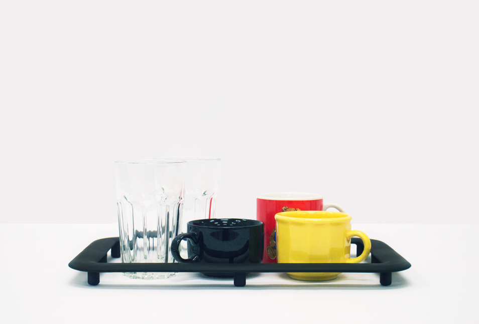
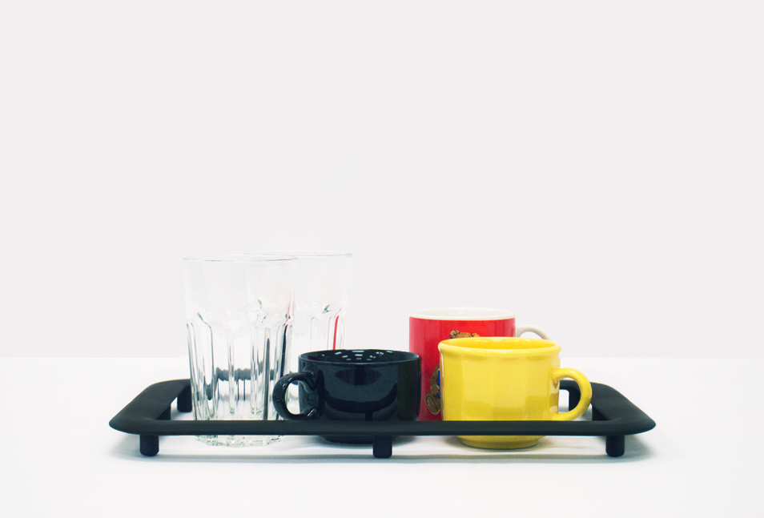
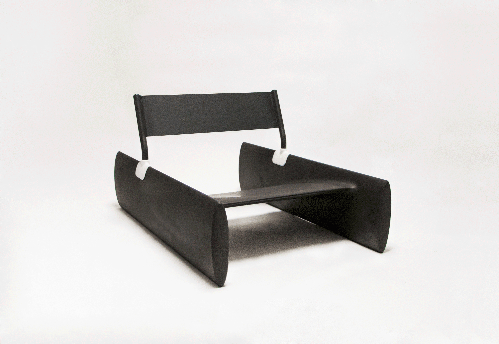
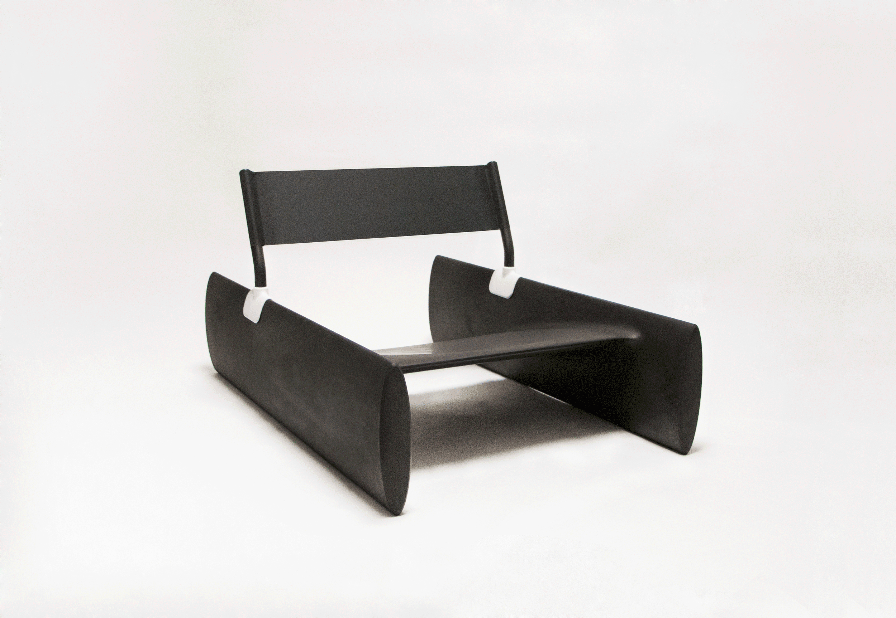
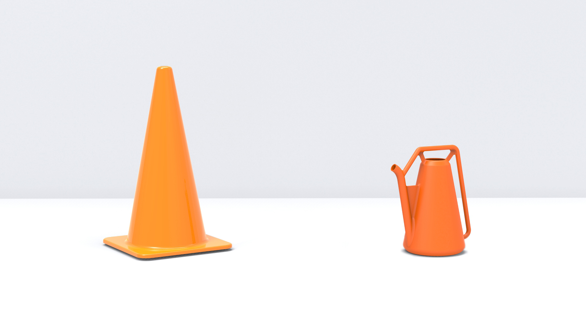
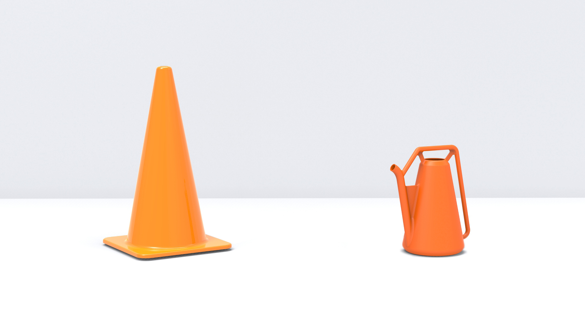

Tim Zarras
About
Tim Zarras is a recent graduate (2016) of the Furniture Design Department at the Rhode Island School of Design.
His focus encompasses furniture and objects, web design and development, creative direction, and imagery.
He is currently available for freelance.
He has an Instagram as well.
Say hello : tzarras@alumni.risd.edu
Website built by Tim Zarras
© Tim Zarras 2016. All Rights Reserved
All project photos taken by Tim Zarras


Senior Show Poster
2016

For our senior show, I created two promotional posters which were hung next to eachother around campus. The posters aimed to acknowledge and represent the complexity, versatility, and actuality of the Department of Furniture Design in 2016 at RISD.
In one case, people simply know the department for our explorations in materials and making- often tied with a playful nickname "Furn." On the other hand, the work we produce is often involved with much larger ideas and practices. The department name begins to feel like a poor representation of its actual output.
Inkjet on newsprint.
Table
2016

This table was inspired by communal architectural plans and the idea of microcosms that exist in architecture.
Through the architectural framing / cropping of the table plane view, a sense of magnitude is added to the object. A person must physically move around and look through the table to access or view an object that may be hidden. The experience of the object is similar to that of one which is much larger.
Similar to larger communal architectural spaces, the center space highlights and frames a public work of this scale, which may be a vase of flowers or bowl of fruit.
Constructed in all oaks.
2016
Display Objects

 

These armatures are for the organization and framing of collections, areas of collection, and objects that inevitably decorate people's homes.
These are advanced concept models. Imagined in nylon - actually made of machined plywood, and PLA.
2015
GH 1


A form study / concept for a column heater. The heater is intended for gallery spaces as a supplementary solution to basic climate control issues - that of which are crucial in preserving artworks. Understanding the distant way in which viewers would acknowledge and approach it - when placed in a space, I liked the idea that it may also behave as an artwork.
The heater can be stored vertically to take up minimal space.
As the precursor to my Senior Degree Project, this project served as a vehicle to raise questions on the use and perception of objects / products analogous to our experience of artworks.
This is an advanced concept model. Imagined in steel and polypropylene - actually made of machined plywood, and PLA.
t 21 i
2015
 


t 21 i is an excersise in working with a semi-fictional context in mind and looking elsewhere for furniture forms- in hopes of bringing you elsewhere.
This is an advanced concept model. Imagined in polypropylene, ABS, steel and nylon - actually made of machined poplar, ABS, steel and nylon.
2015
Garden Chair


A garden chair that's meant to co-exist amongst the lawn / yard landscape. The reserved form of the chair suggests that it is equally as much a tool for sitting, as it is for any other form of use in this setting.
Legs and back are constructed as solid bent laminations.
Dyed ash.
Renderings
2016
 



Assorted concept renderings.
Modeled in Solidworks and rendered in Keyshot.